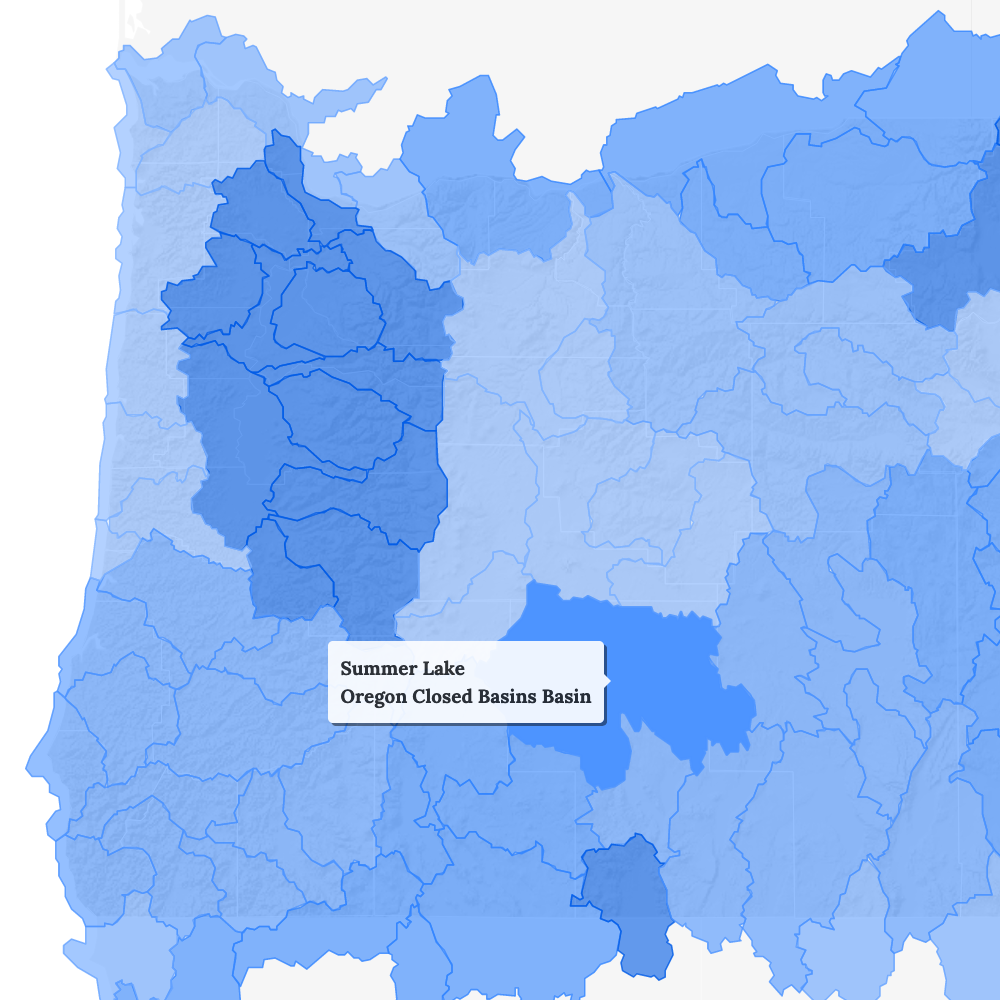
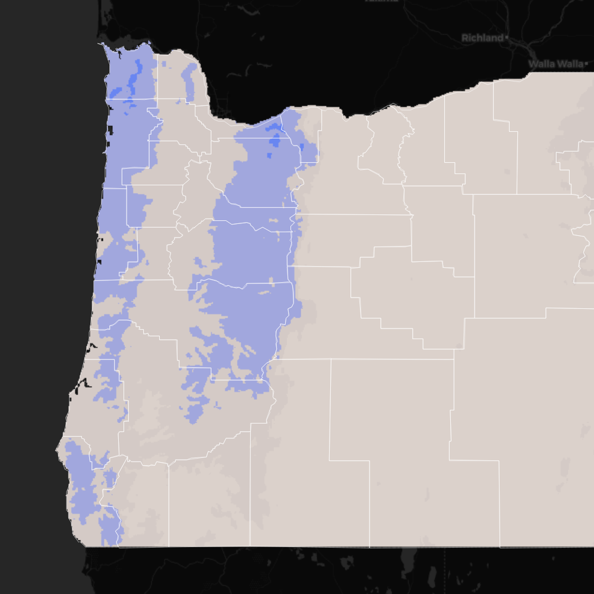
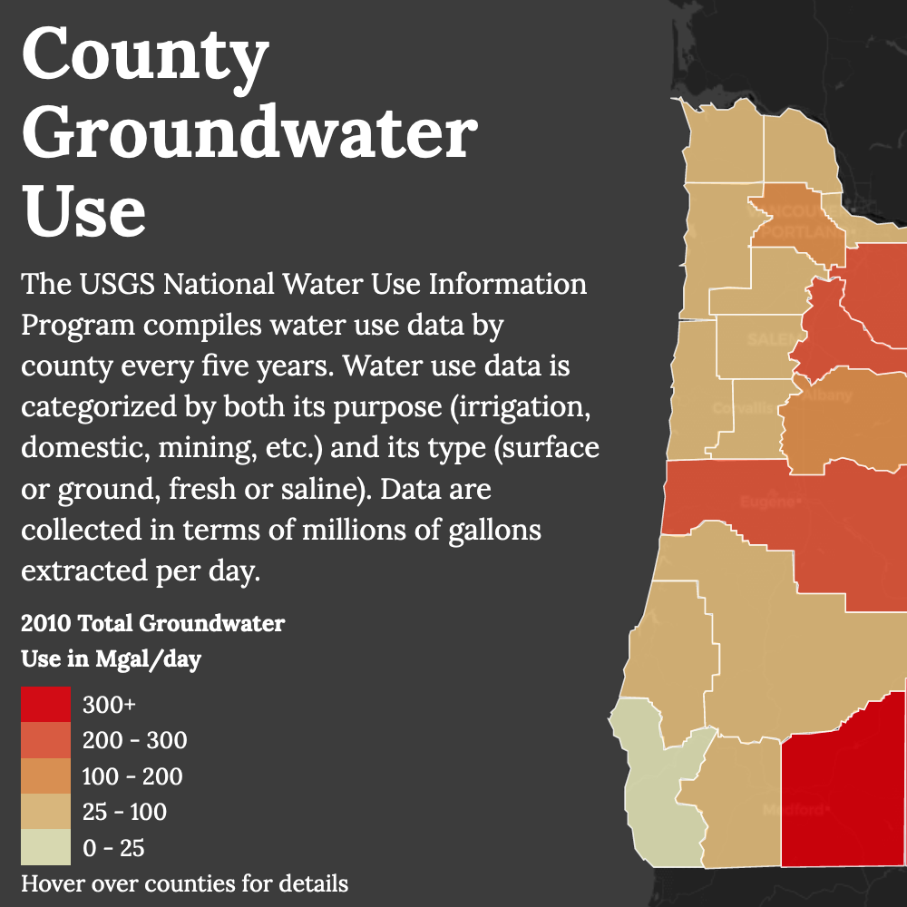
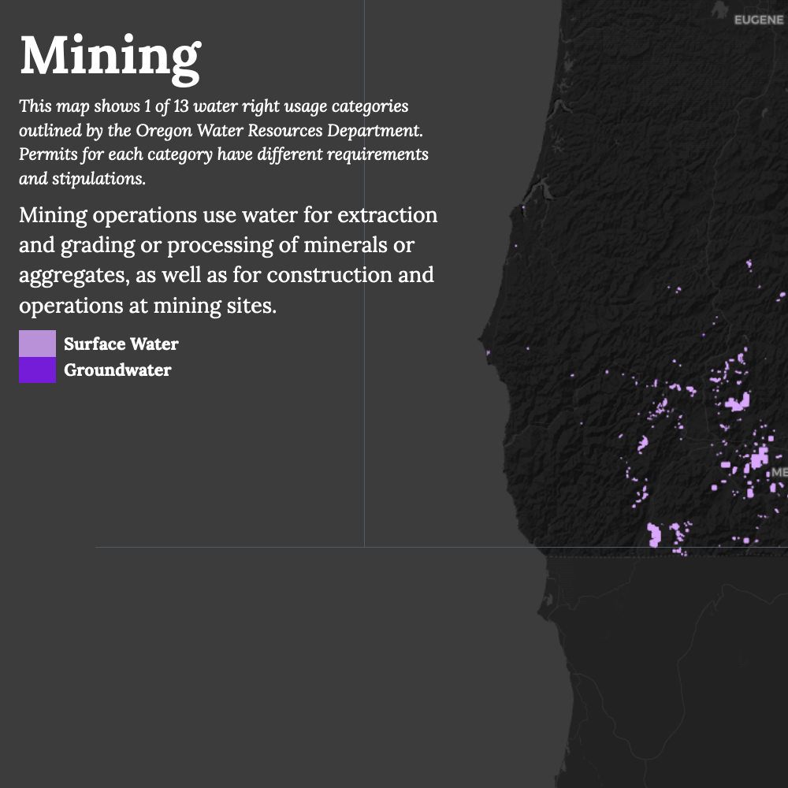
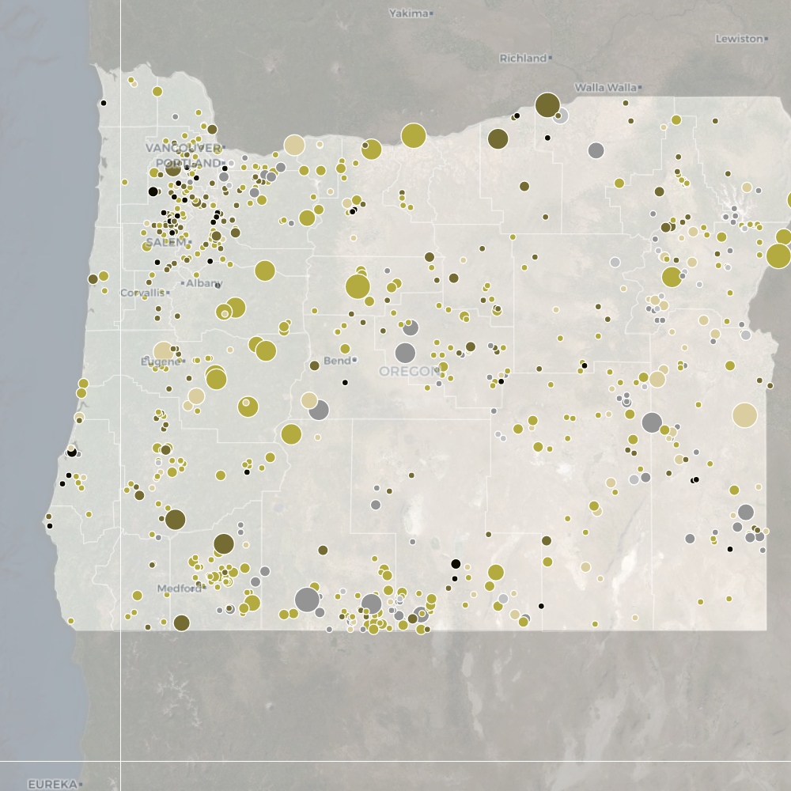
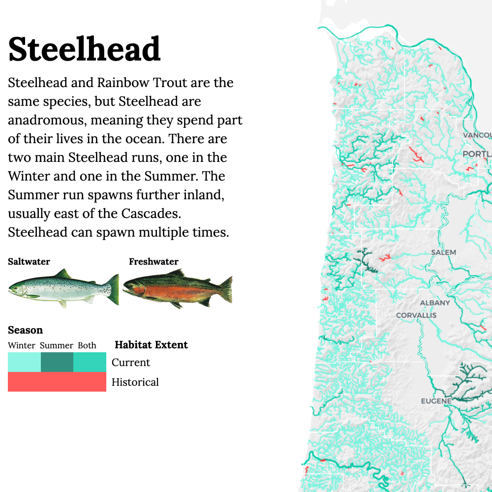

Oregon Water Atlas
A showcase of Oregon’s water data! Created for my undergraduate thesis project at Oregon State University, this atlas was designed to aggregate and visualize water data from disparate pubic sources. As a cartography project, it allowed me to experiment with different visual styles, and choose appropriate styles for each theme. The flooding chapter is my favorite, though I’m also very happy with the color scheme in the fish chapter as well. The accompanying paper can be found here.







